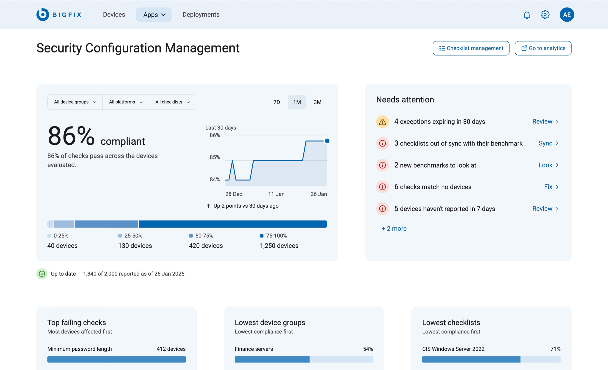
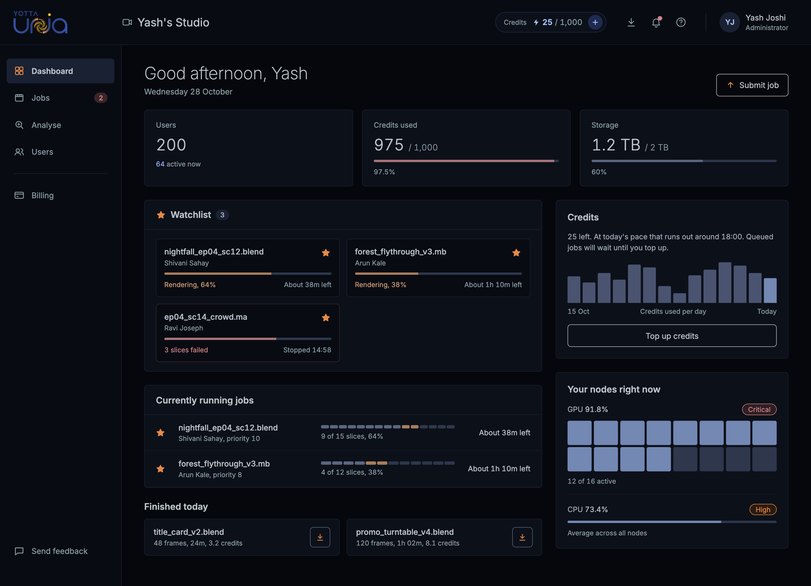
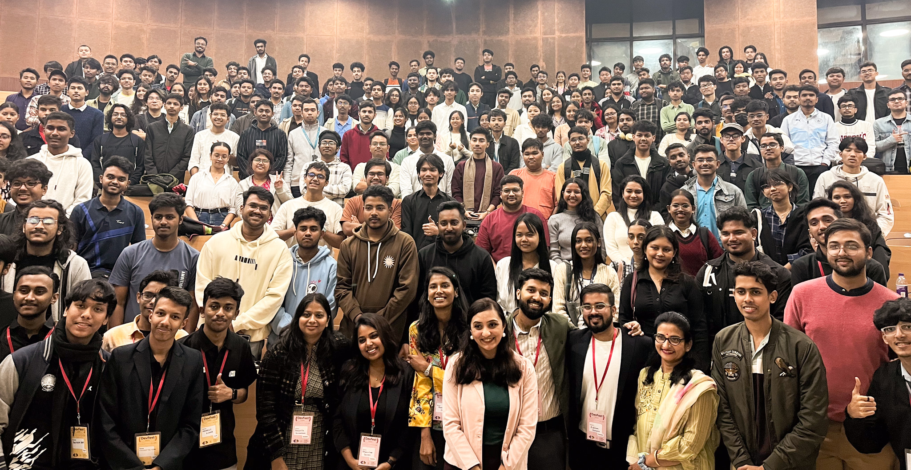

Hi I am Sanchita, UI developer turned Designer. For the last 12 years in the industry I have worked with complex B2B products across Cybersecurity & Fintech. I have spent 2026 working and learning design for AI systems for an early age startup.
Previously worked with:


I have been working with Sanchita for 5 years now and I had a chance to see her growing incredibly in terms of skill depth and breadth. She is extremely reliable and capable of leading initiatives aimed at improving the customer satisfaction and experience. She takes ownership and is also proactive, an extremely good team player
Her ability to transform complex ideas into intuitive and engaging designs is truly remarkable. She was not only a strong contributor individually but also helped foster a positive and innovative team environment. Whether it was working on product interfaces, conducting user research, or driving cross-functional collaboration, Sanchita always excelled
Sanchita stands out in UX. While many rely on outdated guidelines, she listens, learns, and champions user research. She transforms vague ideas into clear, actionable experiences with skill and grace. She truly cares about user.
Since the very beginning, I have noticed her professionalism, skills, and care for the product she works on. She has repeatedly proven her incredible knowledge by solving complex problems with elegant and ingenious solutions. Her approach to solving problems is unique and this makes her an undeniable asset to the team.

"I just wanted to take a moment to thank you for being such an incredible mentor and teammate. You supported me, helped with tools, and made me feel included. Your constant encouragement made me a better designer and created a welcoming environment I will always be grateful for."
"As you embark on your next journey, I want to take a moment to thank you for being an extraordinary mentor and guide. Your support has been invaluable, and your perspectives in cross functional meetings have been a remarkable example. Thank you so much for everything."